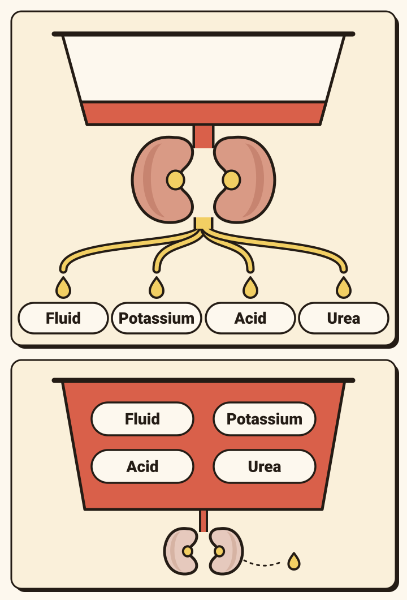
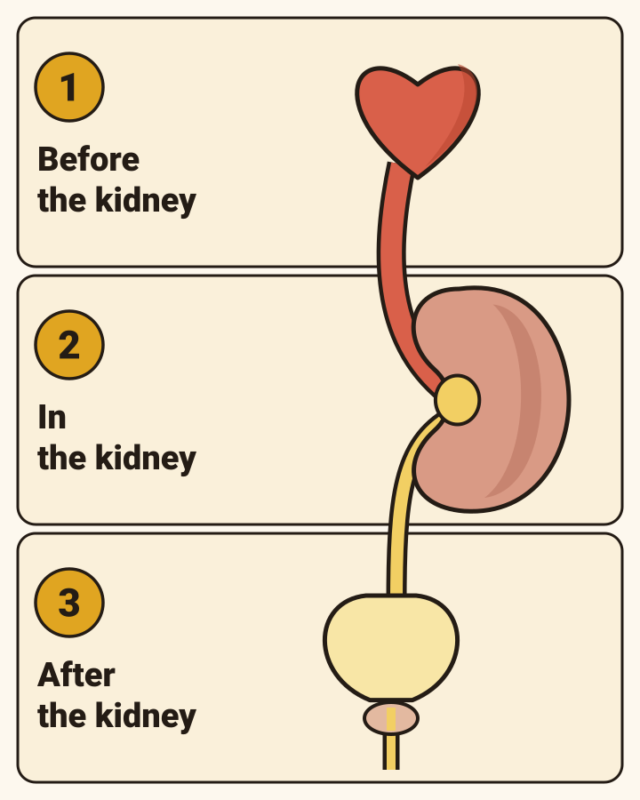
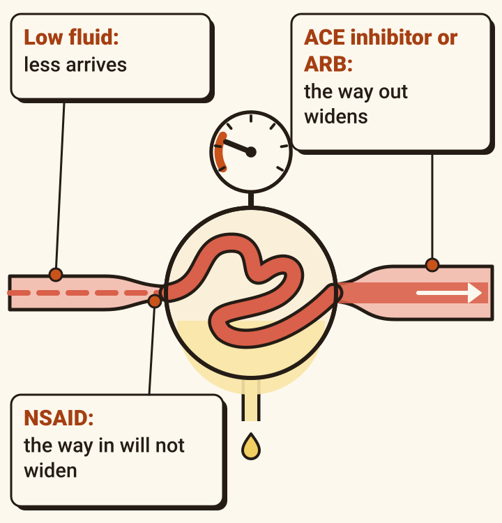
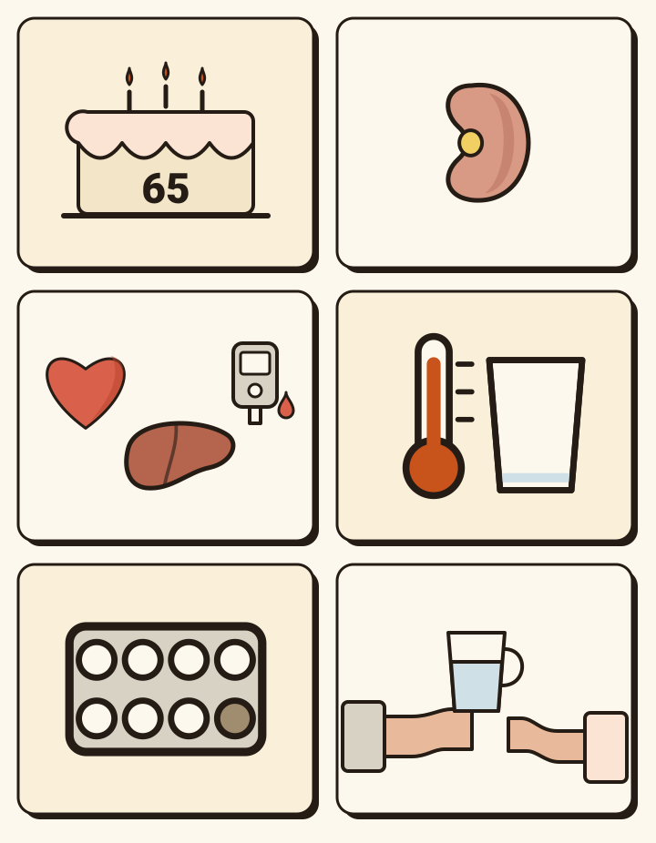
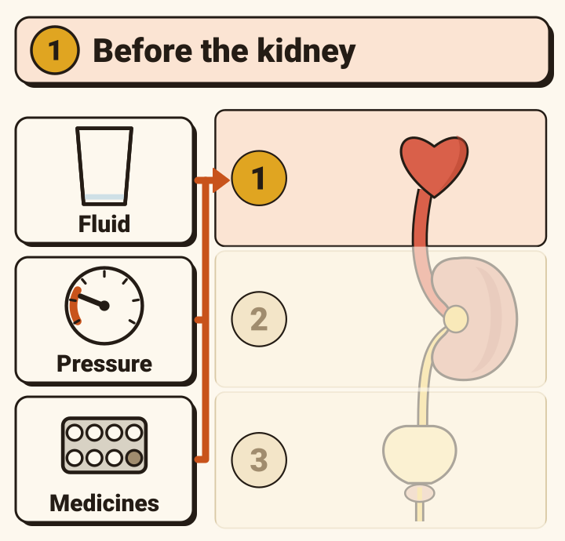
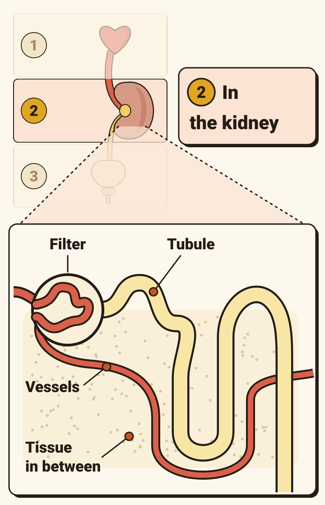
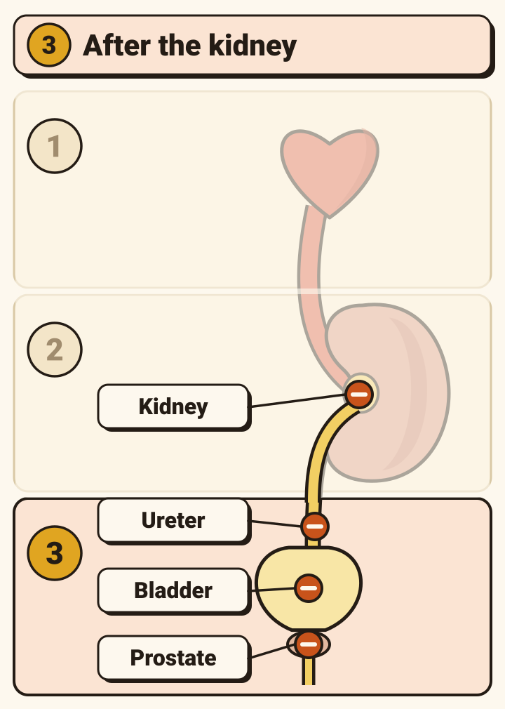
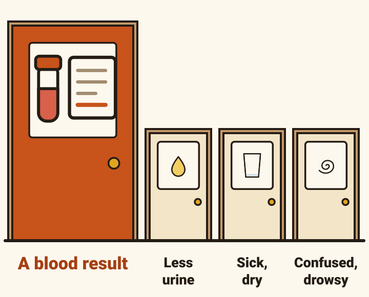
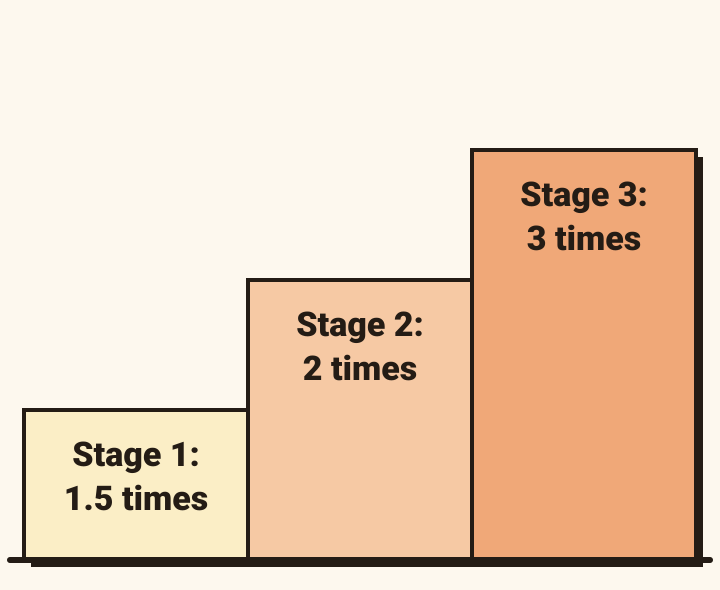
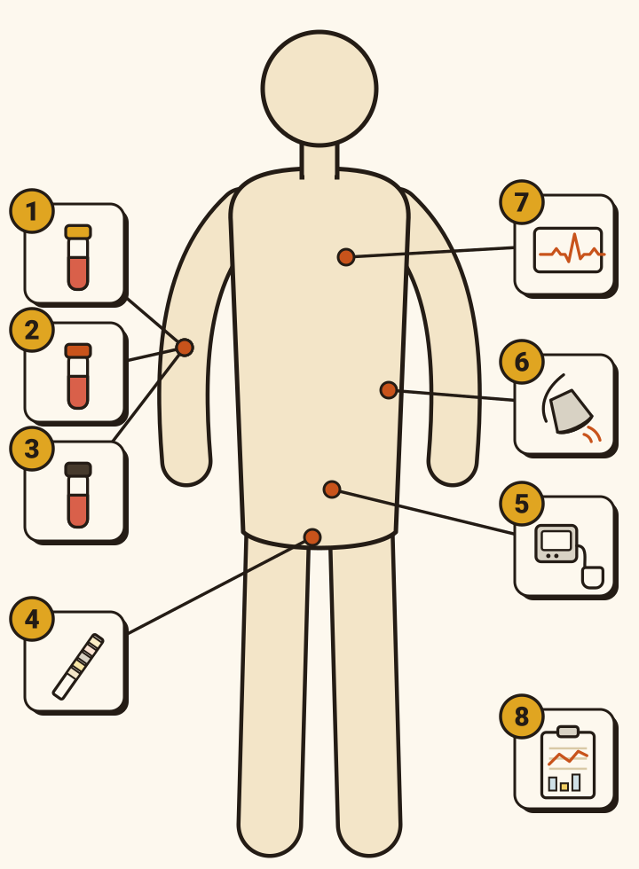

Acute kidney injury, part 1 of 2: what it is, why it happens and how to prove it. The debrief for week 7, Not himself
Thursday, 15:05 · medical assessment
His chart is nearly quiet. His kidneys are not.

- Stanley Garside, 84, was sent in from his nursing home. Since yesterday he has not known the staff, and this morning he hit a carer.
- Pulse 96. Blood pressure 148/82. Temperature 37.9. Oxygen saturation 96% on air. His NEWS2 (the National Early Warning Score) is 4.
- Creatinine 286 micromol/L. Three months ago it was 88. Potassium 5.8.
- These two pages are about that pair of numbers: acute kidney injury (AKI), in anyone.
In plain English
The kidneys have stopped keeping up, over hours or days.

- AKI is a sudden fall in how well the kidneys clear the blood, over hours or days.
- It is not one disease. It has many causes, and they often come together.
- What builds up: fluid, potassium, acid and urea.
- In the UK about one emergency admission to hospital in five is linked with AKI (NHS England 2014, as NICE’s Clinical Knowledge Summary reports it).
What you might say to a relative: “His kidneys have suddenly stopped clearing his blood properly. Often it can be turned round if we find the cause.”
The question on every AKI: where is the problem?
Before the kidney, in the kidney, or after it.

- Before the kidney (pre-renal): too little blood flow or pressure reaching it. The commonest.
- In the kidney (intrinsic): the kidney tissue itself is damaged.
- After the kidney (post-renal): urine is made but cannot drain. The least common: about 1 in 10.
- A problem before or after the kidney that goes on long enough can damage the kidney itself.
- Often more than one is present.
StanleyStanley had some of the first and most of the third.
What is going wrong, inside
Filtering needs pressure. Three ordinary things can each take some away.

- The kidney’s filters need pressure to work.
- Too little fluid in the body: less blood arrives.
- An NSAID (an anti-inflammatory painkiller such as ibuprofen) stops the vessel into the filter from widening.
- An ACE inhibitor or ARB (such as ramipril or losartan) widens the vessel out of the filter, so the pressure inside falls.
- The risk shows most when they are combined, in someone who is ill.
- Few medicines are true poisons to the kidney. These change its blood flow.
The decision: whose creatinine do you check?
An ill adult with any of these needs a creatinine, set against their usual one.

NICE: in an ill adult with any of these, measure the creatinine and compare it with their usual one.
- Aged 65 or over.
- Kidneys already impaired: an eGFR (estimated glomerular filtration rate) under 60.
- Heart failure, liver disease or diabetes.
- Sepsis, or too little fluid in the body.
- In the last week: an NSAID, an ACE inhibitor or ARB, a diuretic, or an aminoglycoside antibiotic such as gentamicin.
- Relying on someone else for a drink, because of dementia or disability.
- Also: a previous AKI; passing little urine (under 0.5 mL per kg an hour); iodine contrast in the last week; symptoms or a history of a blocked urinary tract; early warning scores getting worse.
StanleyStanley had three: his age, his medicines and his dementia.
Cause 1 of 3 · the commonest
Not enough blood is reaching the kidney.

- Too little fluid: not drinking (above all, someone who cannot get a drink without help), vomiting and diarrhoea, bleeding.
- Low blood pressure or a weak pump: sepsis, heart failure, liver failure.
- Medicines that lower the blood pressure, the fluid volume or the blood flow to the kidney: ACE inhibitors, ARBs, NSAIDs, loop diuretics.
- Infection, low fluid, low blood pressure and medicines, often together, account for up to 8 in 10 cases of AKI.
- Usually reversible if treated early.
- Also: fluid lost through the kidneys; burns; spironolactone and similar medicines.
StanleyStanley: days of sips, with ramipril and furosemide still being given. True, and not the whole answer.
Cause 2 of 3
The kidney tissue itself is damaged.

- Less common than the other two, and important not to miss: these need a specialist early.
- Tubules: acute tubular necrosis; muscle breakdown (rhabdomyolysis); myeloma.
- Filters (glomeruli): glomerulonephritis.
- The tissue in between: interstitial nephritis, which a medicine can cause.
- Blood vessels: vasculitis, a clot, debris breaking off an artery, a tear in an artery.
- Drugs and toxins: some antibiotics, NSAIDs, proton pump inhibitors (such as omeprazole), allopurinol, iodine contrast, chemotherapy.
- Rarer: lymphoma in the kidney; tumour lysis; antifreeze (ethylene glycol) poisoning; crystals from medicines such as aciclovir.
Cause 3 of 3 · the least common
The urine is made and cannot get out.

- The bladder will not empty: an enlarged prostate; a bladder whose nerves are not working; a blocked catheter.
- Medicines can stop the bladder emptying too: those with anticholinergic effects (some antidepressants and bladder tablets among them) and opioids. Older people are at higher risk.
- Something pressing or growing: a mass or tumour in the abdomen or pelvis.
- Stones in the kidney or ureter.
- The blockage raises the pressure inside the kidney and filtering falls.
- Also: scarring behind the abdomen (retroperitoneal fibrosis); an infected, blocked kidney (pyonephrosis).
StanleyStanley’s cause was here: three long-standing medicines that each make it harder for the bladder to empty, and an illness that put him on his bed.
The decision: when do you think of it?
Often it does not turn up. A blood test finds it.

- AKI often causes no symptoms, especially early.
- When there are any: passing less urine, or a change in its colour; sickness, diarrhoea, looking dry; confusion, tiredness, drowsiness.
- The laboratory compares each creatinine with the patient’s earlier results and flags a warning stage, 1 to 3.
- It can only do that if there is a result from the last year to compare with.
- And only if somebody reads it.
StanleyStanley looked like a confused old man with a temperature. The creatinine was the part nobody could see.
286 against 88
One creatinine means little. Two give you the diagnosis and the stage.

- It is AKI if any one of these is true.
- Creatinine up by 26 micromol/L or more within 48 hours.
- Creatinine up by half or more (1.5 times the baseline), known or presumed to have happened within the last 7 days.
- Urine under 0.5 mL per kg an hour for more than 6 hours.
- Stage 1: 1.5 to 1.9 times baseline. Stage 2: 2 to 2.9 times. Stage 3: 3 times or more.
- Also stage 3: a creatinine that has risen to 354 micromol/L or more, or dialysis started.
- Use whichever gives the worse stage.
Stop and decide. 286 against 88.
Stanley286 ÷ 88 = 3.25. Stage 3. He weighs 68 kg, so 0.5 mL per kg an hour is 34 mL an hour.
- No earlier result at all? Repeat it. In hospital, a creatinine that moves over 12 to 24 hours shows the AKI is active.
The decision: what do you send, and why?
Each test answers one question.

Tap a test.
Is it AKI, what stage, and which way is it going?
Is the heart at risk?
How much acid has built up?
Blood and protein. Is the kidney itself diseased?
Is the bladder full?
Is the way out blocked?
Has a high potassium reached the heart?
Is it sepsis? Dry or overloaded? How much urine?
- Only when the story asks for them: a urine protein-to-creatinine ratio, if there is protein on the stick; a urine culture, if infection is suspected; creatine kinase, if muscle breakdown is suspected; lactate and a blood gas in sepsis or poor blood flow; antibody and myeloma tests (Part 2).
End of Part 1
Next: what to do.
ROUND UP letter by letter, potassium, who to call, what not to do, and going home.
Where this comes from.
- Harrogate and District NHS Foundation Trust. Clinical guideline (care bundle) for AKI management in adults: ROUND UP. Version 3, May 2025.
- NICE NG148. Acute kidney injury: prevention, detection and management. 2019, updated October 2024. nice.org.uk/guidance/ng148
- NICE Clinical Knowledge Summary. Acute kidney injury. Revised July 2023. cks.nice.org.uk/topics/acute-kidney-injury
- UK Kidney Association. Clinical practice guideline: acute kidney injury. August 2019. Its review date, August 2024, has passed. ukkidney.org
- UK Kidney Association. Treatment of acute hyperkalaemia in adults. June 2020. Its review date, June 2025, has passed. ukkidney.org
- KDIGO. Clinical practice guideline for acute kidney injury. 2012. kdigo.org
- NHS England. Algorithm for detecting acute kidney injury. 2014. england.nhs.uk
- Think Kidneys (NHS England and the UK Renal Registry). Sick day guidance (2020), responding to AKI warning results (2018), medicines optimisation (2016). The programme ended in 2019 and its pages are an archive. thinkkidneys.nhs.uk
- Verhamme and colleagues. Drug-induced urinary retention: incidence, management and prevention. Drug Safety, 2008. doi:10.2165/00002018-200831050-00002
Guidelines change. Checked October 2026.